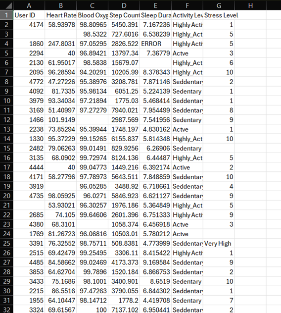
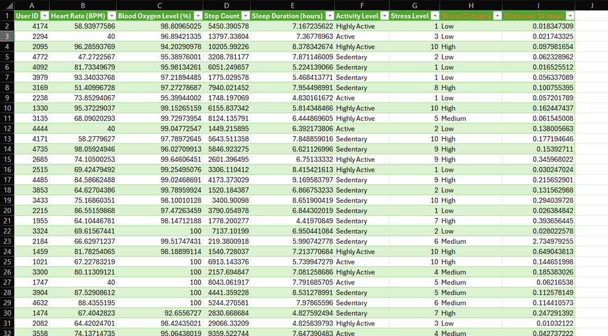
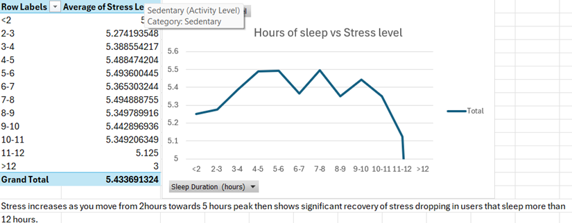
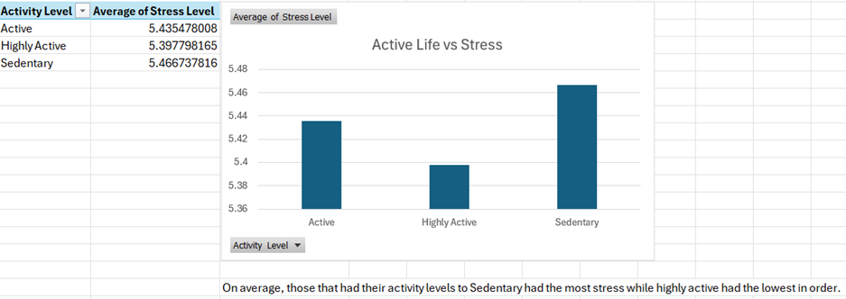

This project demonstrates a full data pipeline within Microsoft Excel—starting from a messy CSV export and ending with an interactive dashboard that identifies correlations between activity, sleep, and stress.
Before cleaning: Notice the unformatted headers and raw sensor values.

The original file, unclean_smartwatch_health_data.csv, contained raw sensor logs with inconsistent formatting and missing values.
After processing: Headers are cleaned, and new calculated columns have been engineered.

I moved beyond basic cleaning to create derived metrics that provide deeper context into user health:
Resulting file: clean_data_1.xlsx
This Pivot Chart identifies the "recovery point" where stress levels drop significantly relative to sleep hours.

Analyzing the Stress per 1k Steps metric reveals how different activity intensities affect physiological strain.

You can find the raw data, the cleaning logic, and the final dashboard in my repository: